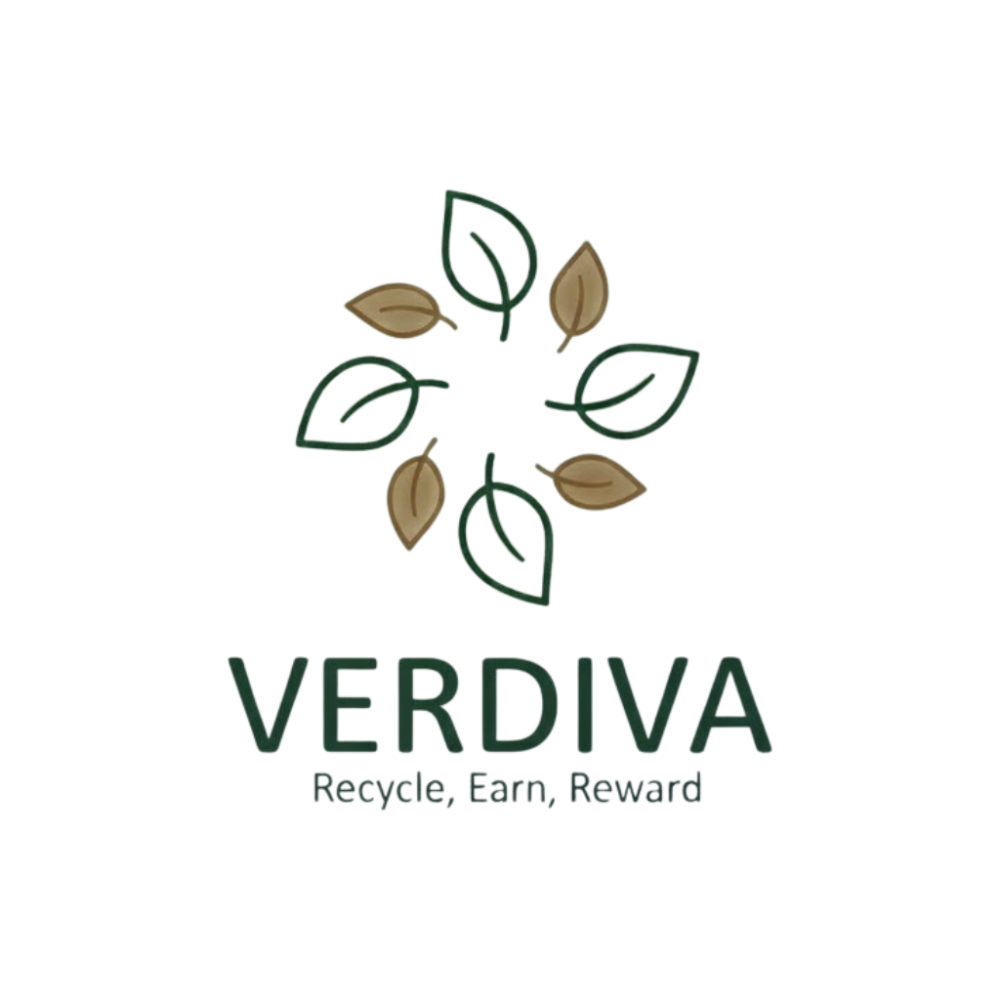

Reciclagem & Sustentabilidade
Reciclar é um gesto de amor à natureza
Faça parte dessa mudança com o Verdiva
♻️
🌍
🌱
💚
▶
COMECE AGORA
1 Bilhão
Toneladas de lixo geradas anualmente
30%
Redução de emissões com reciclagem
75%
De redução de energia ao reciclar